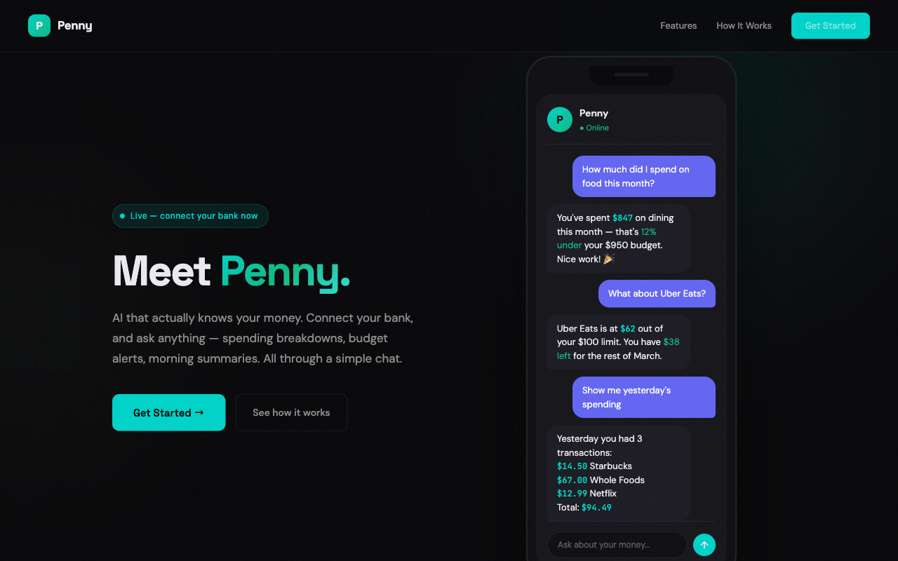
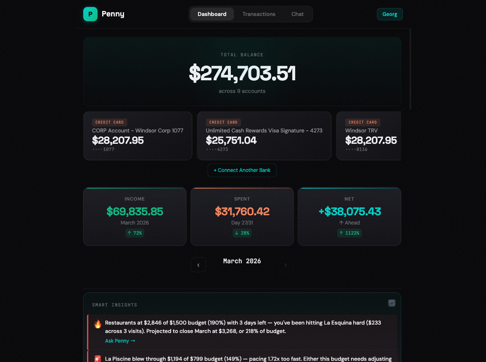

Penny is a Claude-powered finance app that connects to your real bank accounts and answers any question about your spending, budgets, or balance. No dashboards to learn, no rules to configure — just ask.

Penny reads your actual transactions from connected accounts and answers in plain English. No spreadsheets, no exports.
"How much did I spend on coffee this month?" "What's my burn rate?" Penny pulls from your transaction history and answers directly — no canned categories.
Category and merchant rollups updated as transactions land. See trends across months without configuring a single budget.
Daily digest of new transactions, recurring charges, and balance changes. Configurable in chat — "send me a summary every morning at 8."
Plaid and Teller integrations cover most US banks. Read-only access, OAuth-gated. Penny never moves money — it just sees what's there.
Two main surfaces — a chat that knows your money, and a dashboard that summarizes it. Both use the same live data.
Most finance apps make you click through five screens to find your coffee spend. Penny lets you just ask — and answers with the actual number, with sources.
Claude Sonnet 4.5 powers the reasoning. Your transaction history is the context window. Every answer is grounded in real data, not vibes.
Total balance across connected accounts. Month-over-month delta. Income vs. expense vs. invested. Recent transactions with merchant logos.
For when you don't want to ask — you just want to see.

From request access to talking with Penny: usually 90 seconds.
OAuth flow through Plaid or Teller. Read-only access. No credentials stored on our servers.
Transactions, balances, categories pulled into a local Postgres. ~30 seconds for typical accounts.
Type any question. Penny grounds Claude's answer in your real transaction data, with citations.
Morning summaries, budget alerts, weekly trends. Configured by chat, not by form.
Penny handles real bank data — the stack is conservative on purpose. No third-party LLM proxies, no shared inference, no analytics tracking the questions you ask.
Penny is a personal project, not a public SaaS. Access is by request — drop a line with a short note about what you'd want to ask it, and you'll get a login.
Request demo access →Penny handles real bank data. Access is granted manually and revoked at any time. No marketing list, no waitlist game — just a real human inbox.